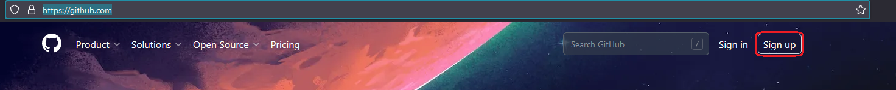
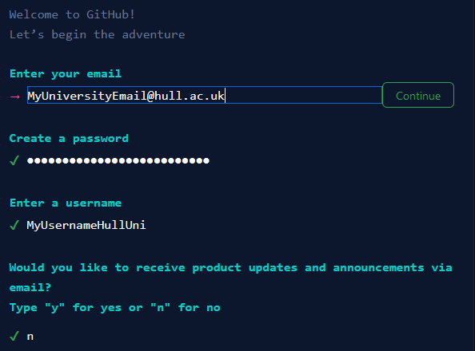

GitHub: The Basics
What is GitHub?
GitHub is an online content hosting service that allows people to store, manage, share and collaborate on software that they create. It has been owned by Microsoft since 2018 and is one of the largest hosts of source code on the planet.
No matter what kind of developer you are, GitHub has several benefits. Some of which will be covered in more detail below. But, at this stage the main aspect of GitHub that you will become familiar with is version control.
Version control (sometimes referred to as source control) is the tracking and management of a project throughout its development. This is especially important when multiple people are working on a project at once.
With effective version control you can help prevent your project being lost (no more corrupted hard drives the night before hand-in!) and can also make attempted changes or further modifications to a known-working project without worrying that you will not be able to get it back to a working state if something goes wrong.
Effective version control also allows multiple developers to work on the same project simultaneously with minimal disruption, which allows you as a developer to complete tasks more quickly and effectively. GitHub has been built from the ground up to support this process, therefore has several tools to make this process as easy as possible. But before you begin to use them, you must first create a GitHub account (it’s free!)
Creating a GitHub Account
Before you can begin to use GitHub features you must first create an account, to do this follow the steps shown below.
Step One:
Navigate to: https://github.com/
Step Two:
Navigate to the “sign up” button, located on the top right-hand side of the screen. (Shown by the red rectangle in the image below)

Step Three:
Follow the sign-up step-by-step sign-up process that is provided by the website.
It is important as this point that you sign up using your University E-Mail. This will ensure that all your university work is accessible in a place that is easy for you to locate and will be recoverable if you forget your account details.
A completed sign-up form should look something like this.

Complete the CAPATCHA at the bottom of the page and press create account to complete the sign up.
Step Four:
The final step in the account creation process is to verify your account. The GitHub website will ask you for something called a “launch code” that will be used for this.
Navigate to your e-mail and you should have received a message from GitHub (it may show in the “Other” section of your e-mails.)
Complete the steps covered in the e-mail and your account set up should be complete. You will now be able to log in if GitHub does not automatically redirect you.